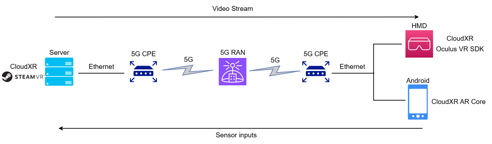
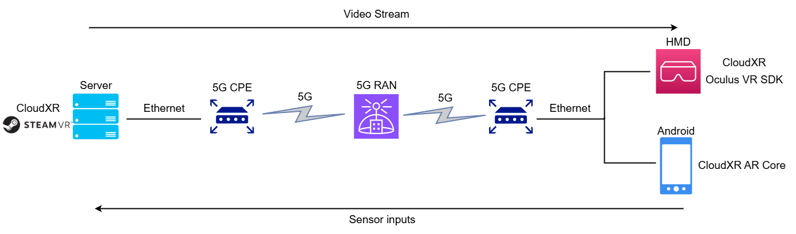

For my honors project I researched in to offloading VR to Edge servers over 5G. I chose this project
to learn more about networking, which is the area of programming and development I felt the weakest
in, and to try developing for VR.
Reducing the HMDs size and weight will reduce the strain on the users neck and reduce the heat
coming from the device with the computation happening elsewhere. This will let the users move faster
and for longer.
The goal was do research and develop a networked solution to offload and stream VR from a server to a
client. This research can be continued and used to aid in research to develop VR headsets (HMDs) that
are smaller, lighter, more accessible and easier to use. the main practical application i has in mind
was technology to improve VR Arenas – an in person active activity where multiple people are in a large
area using VR headsets to play games together from shooting NPC enemies to playing VR enhanced sport.
I tested the latencies of my setup and cross-references them with other word that describes the maximum
and ideal latencies. I concluded that in my setup the latencies I achieved were not fast enough for playable VR.
I achieved an average round trip delay of 80ms where other research shows that a maximum of 50ms is needed to
adequate VR and 15-20ms is needed for an ideal setup.